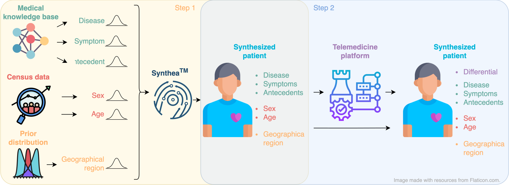

Patient
Data
Consultation
Differential diagnosis
What a model must reason over for this patient — not just the single confirmed pathology above.
1.3M synthetic patients, 49 pathologies, and 223 binary/categorical/multi-choice evidences — built to train and evaluate models that ask questions and reason over differential diagnoses, not just predict a single label.

What sets it apart from single-label symptom-checker datasets.
Each patient carries a ranked, probabilistic set of plausible pathologies — how clinicians actually reason.
223 binary, categorical, and multi-choice evidences with built-in dependencies, enabling realistic sequential-questioning agents.
Pathologies carry clinical severity; patients span age, sex, and region — for studying triage and fairness.
~1.3M patients split into train/validate/test, generated from 49 pathologies and 223 evidences.
What a model must reason over for this patient — not just the single confirmed pathology above.
The three JSON/CSV structures behind DDXPlus, with a real excerpt from the released English dataset for each — documented in full in the README.
Grab the released files and load a split in a few lines of pandas.
Same data and format as the French release, but with English names/codes throughout.
The version all results in the NeurIPS 2022 paper were obtained on.
release_evidences.json — all 223 evidencesrelease_conditions.json — all 49 pathologiesrelease_train_patients.zip — training splitrelease_validate_patients.zip — validation splitrelease_test_patients.zip — test splitReleased under a CC-BY licence.
Papers and benchmarks built on DDXPlus.
If you use DDXPlus in your work, please cite the NeurIPS 2022 paper.